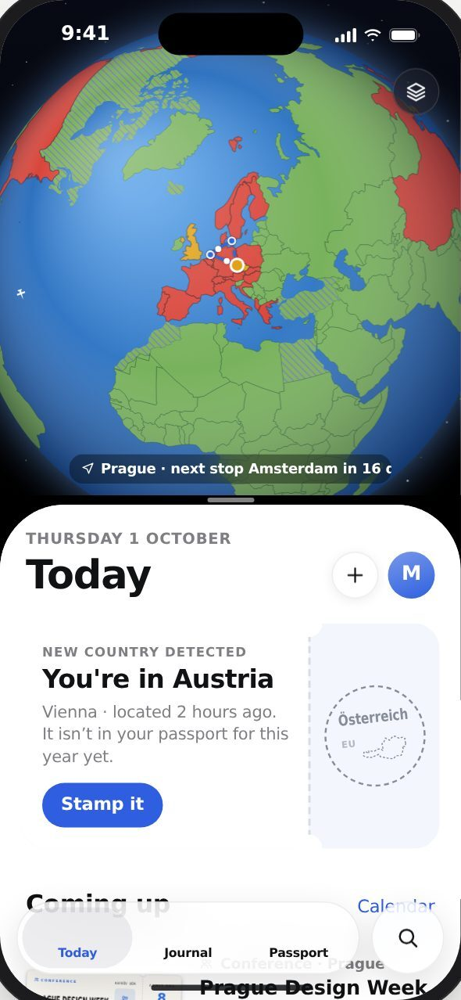
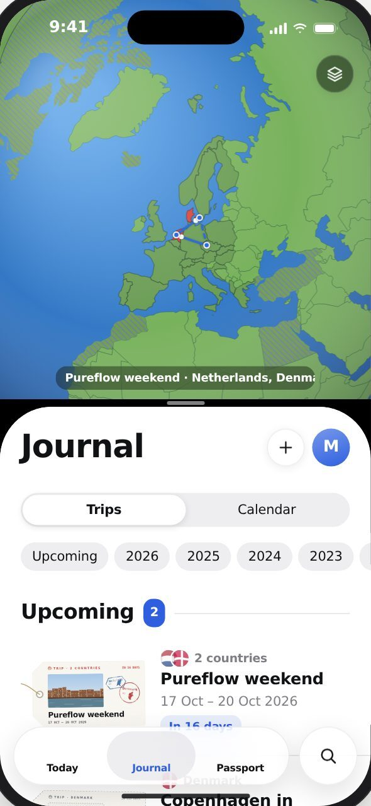
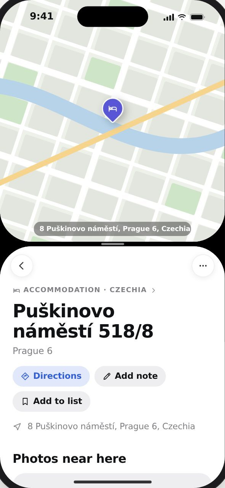
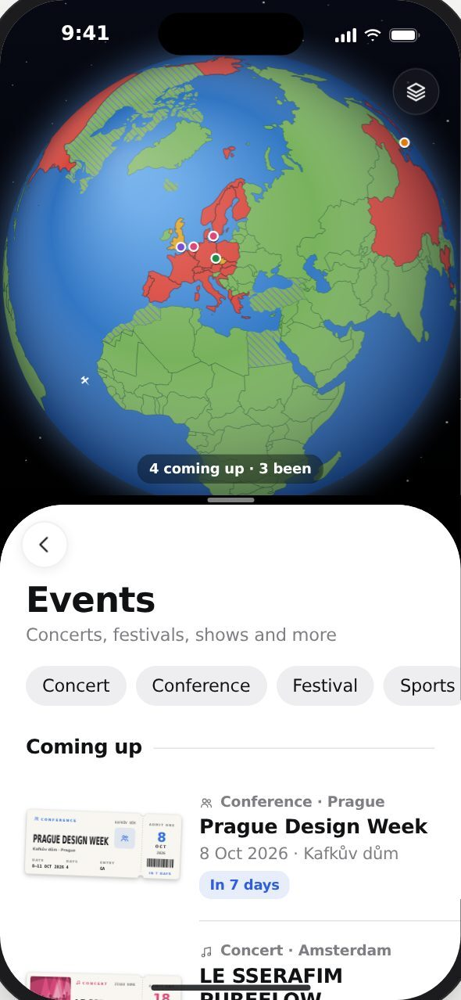
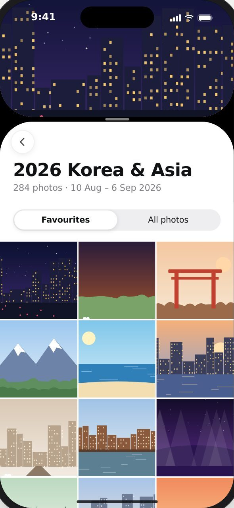
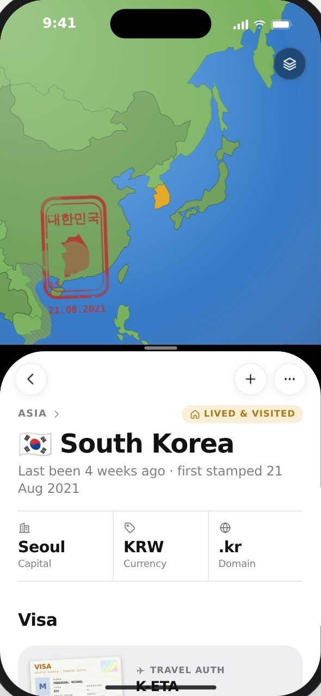
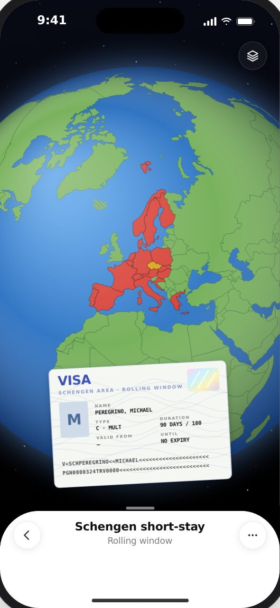
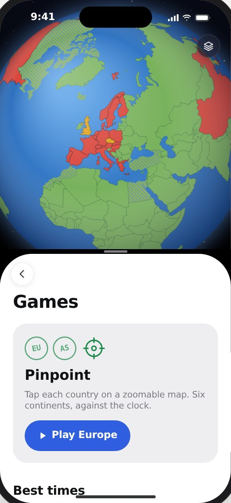
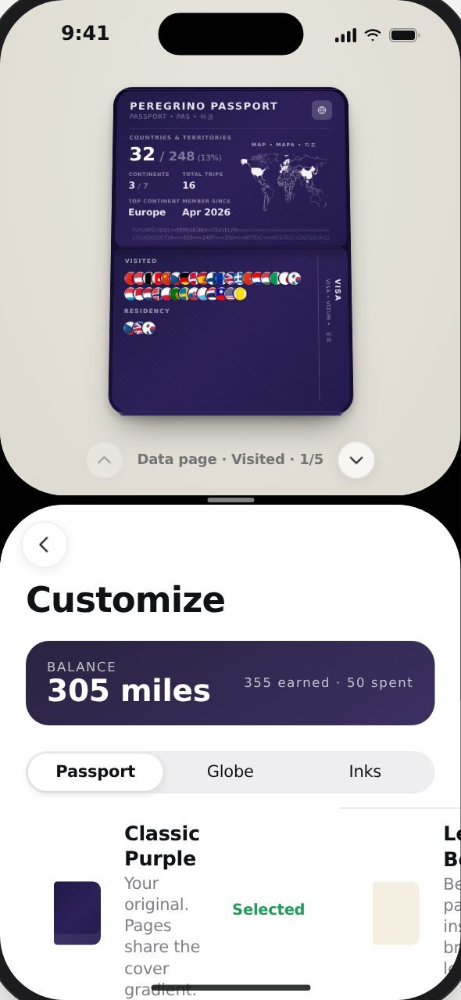

Share a flight straight in.
Share an itinerary from Flighty and Peregrino reads the flight, the airports and the times, then prints the ticket for you.
Peregrino
Every country you visit gets a stamp. Every journey gets a ticket. Your trips become postcards.
Countries, trips, tickets and the photos in between. Filed as you go.
Today
Open the app somewhere new and Peregrino spots it. One tap stamps the country into this year's passport, with the date already on it.


Passport
Your own Peregrino passport, in your name. Pick the cover, the ink and the pages.
Countries and territories out of 248, continents, trips, and the corner of the world you keep going back to.
Each one inked in its own shape and language, dated the day you got there. Visited, lived, wishlist and planning, all kept apart.
Visited · Navštíveno · 방문
Residency
Visa · Vizum · 비자
3Peregrino
Passport
Passport · Pas · 여권
Peregrino Passport
Passport · Pas · 여권
Countries & territories
0 / 248(0%)
Continents
3 / 7
Total trips
0
Top continent
Europe
Member since
Apr 2026
Map · Mapa · 지도
P<PGNTRAVELER<<PEREGRINO<<<<<<<<<<<<<<<<<<<<<
ISSUED04OCT26<<<32V<<<248T<<<EU<AS<NA<<<<<<<
Tickets
Flights, trains, ferries, buses and walks, printed as you add them. Planned ones are pencilled in, booked ones count down, and once you've been the stub is torn.
Statistics
Journal
Every trip gets a luggage tag: where you went, when, and the countries it took in. Open one and it's all there, the route, the tickets, the places and the photos you took on the way.








More in Peregrino
Share an itinerary from Flighty and Peregrino reads the flight, the airports and the times, then prints the ticket for you.
The rolling 90 in 180 window, worked out from your trips, so you know how long you can stay.
Enamel pins for continents, firsts and streaks, and Game Center leaderboards for the map games.
Turn countries, pins, arcs and planes on or off, or flatten the globe into a map.
Open a place or a trip and the photos you took there are already waiting, pulled from your library by where and when.
See every trip, stay and event on one calendar, and scroll back through the months to find where you were on any day.
Tap each country on the map before time runs out. Six continents, and a best time to beat.
Peregrino
Free on iPhone. The first stamp is on us.
No. If you allow location, it checks which country you're in when you open the app, and offers a stamp if it's a new one. Leave location off and you add countries and trips yourself; everything else works the same.
Yes. Add the trip with its dates and Peregrino pulls in the photos you took there from your library, so old trips fill out as quickly as new ones.
The passport counts 248 countries and territories, so places like Hong Kong, Greenland or the Faroe Islands get their own stamp.
No. Trains, ferries, buses and walks all get tickets, and so do concerts, festivals and conferences. Places you stayed or ate at have their own list too.
On your iPhone. Your passport is yours, and nothing about where you have been is shown to anyone unless you share it.